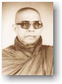
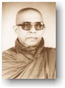

|
Phật Giáo, Nhìn Toàn Diện
Hòa thượng Piyadassi Trung tâm Narada, Seattle, Hoa Kỳ, xuất bản, 1995. |
 |
|
BuddhaSasana Home Page |
Vietnamese, with Unicode Times font |
|
|
Phật Giáo, Nhìn Toàn Diện
Hòa thượng Piyadassi Trung tâm Narada, Seattle, Hoa Kỳ, xuất bản, 1995. |
 |
-ooOoo- Nayaka Thera (Ðại Lão Tăng) Piyadassi sanh trưởng tại Sri Lanka (Tích Lan), lãnh thổ đã dưỡng nuôi Phật Giáo non 2,300 năm qua. Ngài học tại trường Cao Ðẳng Nàlanda, một trung tâm Giáo Dục Phật Giáo quan trọng trong xứ, rồi vào Ðại Học University of Sri Lanka. Ngài xuất gia vào năm lên hai mươi và vững chắc thấm nhuần giáo lý và triết học Phật Giáo dưới sự hướng dẫn của vị Ðại Lão Tăng Vaji-ranàna, sáng lập viên-tăng trưởng chùa Vajiràràma, Colombo, một trong những nhân vật Phật Giáo lỗi lạc nhất tại Tích Lan. Ngài cũng là sinh viên nghiên cứu tại Trung Tâm Nghiên Cứu Các Tôn Giáo Thế Giới tại Ðại Học Harvard, Mỹ Quốc. Ngày nay Ðại Ðức Piyadassi là một trong những nhà sư nổi tiếng nhất trên thế giới, một nhà truyền giáo làm việc không biết mệt, đã du hành nhiều lần vòng quanh thế giới để hoằng dương thông điệp hòa bình, từ bi và trí tuệ cho cả Ðông Phương lẫn Tây Phương. Trong những năm phụng sự đạo pháp dài dẳng Ngài đã nhiều lần đại diện xứ Sri Lanka trong những hội nghị quốc tế về tôn giáo và văn hóa. -ooOoo- LỜI NÓI ÐẦU Vào đầu thế kỷ hiện tại thái độ của người Phương Tây đối với các tôn giáo Á Ðông trải dài từ thù nghịch, gây thống khổ, đến chiếu cố khoan dung. Ðó là thái độ được duy trì, tồn tại theo chánh sách chinh phục xâm lăng và khai thác kinh tế. Người Phương Tây tự xem mình là nhà lãnh đạo đem lại mọi tiến bộ, người cầm ngọn đuốc kiến thức được thần linh trao truyền để soi sáng cho dân chúng dốt nát tối tăm ở Phương Ðông. Như vậy, theo lối nhìn của họ, sự đáp ứng thích nghi của các dân tộc Ðông Phương là chấp nhận với lòng tri ân, và tận tâm học hỏi. Chỉ có vài tư tưởng gia can đảm người Phương Tây và những học giả khó có thể vừa lòng, mới dám khảo sát sâu hơn vào những hệ thống tôn giáo và triết học của những quốc gia dưới quyền thống trị của xứ họ. Mặc dầu vậy, công trình lẻ loi đơn độc của những vị này đã lót đường cho những biến chuyển vĩ đại dần dần xảy diễn theo thời gian. Ngày nay, các quốc gia Á Ðông đã hồi phục nền độc lập của họ về mặt chánh trị. Dưới sự hướng dẫn của các nhà trí thức tiền phong họ đã khảo sát, nghiên cứu dài theo và sâu vào di sản văn hóa cổ truyền của chính họ, tìm những tư tưởng và những giá trị nhằm ổn cố ý thức về lý lịch quốc gia được khám phá trong những năm gần đây và nhằm nâng đỡ họ trong thế gian hiện đại. Nơi đây họ đã khám phá nhiều điều vẫn còn giá trị và thế đứng vững chắc, không những cho họ mà cho tất cả những ai tìm hiểu thiên nhiên và vận mạng của nhân loại một cách rõ ràng. Bởi vì trí tuệ và những giá trị tinh thần mà những hệ thống cổ xưa này đề xướng đòi hỏi phải áp đặt vào con người theo bản chất thiên nhiên của con người, độc lập với bất luận tình trạng văn hóa tạm bợ nhất thời nào. Tại Sri Lanka (Tích Lan), cũng như trong các quốc gia Á Ðông khác, công trình tìm kiếm căn cội tập quán cổ truyền đã đưa đến thành quả là khám phá trở lại truyền thống tôn giáo thâm sâu và rộng lớn bao la gọi là Phật Giáo, một truyền thống khắng khít gắn liền với lịch sử của Hải Ðảo từ thế kỷ thứ ba trước D.L. và đã là nguồn gợi cảm để hoàn thành viên mãn những công trình sáng tác, trí thức và nghệ thuật, vĩ đại nhất. Trong di sản Phật Giáo những nhà khảo cứu Sri Lanka (Tích Lan) đã tìm ra một hệ thống giáo huấn đạo đức hòa hợp thích ứng một cách lạ lùng với vài kiến thức khoa học và triết học tân tiến nhất, và trong các quốc gia Phật Giáo Á Ðông các nhà khảo sát cũng kinh nghiệm giống như vậy. Giờ đây, do hậu quả của công trình tìm trở lại và khám phá ra nền đạo đức này, và nhằm đáp ứng tình trạng đạo đức ngày càng nghèo nàn của Phương Tây quá thiên về vật chất, mối liên hệ xưa cũ giữa hai bán cầu to lớn đã có vài chuyển biến khá hứng thú. Ngày nay chính người Phương Tây thường đã chứng tỏ là mình cần được soi sáng, và một vài nhân vật minh mẫn sẵn sàng ngồi lại dưới chân các vị thầy ở Phương Ðông để thọ nhận những tia sáng đạo đức của Phật Giáo và những truyền thống tôn giáo Á Ðông khác. Ðại Ðức Piyadassi Mahàthera là một nhà sư Tích Lan và là một trong những vị đại diện cho Phật Giáo Nguyên Thủy (Theravàda) nổi tiếng nhất trong xứ. Trường phái Nguyên Thủy (Theravàda) căn cứ trên Kinh Ðiển Phật Giáo xưa cũ nhất được gìn giữ trong ngôn ngữ Pali. Là thừa kế của tập tục cổ truyền được duy trì hơn 2500 năm, Ðại Ðức Piyadassi phối hợp một nền tảng vững chắc trong kinh điển và chú giải Pali với tinh thần đón nhận cởi mở những tư tưởng tiến bộ hiện đại từ Phương Tây mà Ðại Ðức thấy là trên nhiều phương diện đã xác nhận giáo lý nguyên thủy của Ðức Phật. Ðại Ðức là một Pháp Sư nổi tiếng tại Tích Lan (Sri Lanka) và thỉnh thoảng châu du sang Phương Tây, khoảng mười hai lần vòng quanh thế giới, để giảng giải Giáo Pháp. Ðại Ðức Piyadassi trình bày một hình ảnh Phật Giáo vừa trung thực với những nguồn kinh điển cổ truyền vừa tân tiến một cách kỳ diệu. Phật Giáo mà Ðại Ðức Piyadassi mô tả cung ứng một triết lý sâu sắc về kiếp sinh tồn căn cứ trên Tứ Diệu Ðế; một phân giải chi tiết tâm của con người, đi trước vài khám phá của khoa tâm lý học hiện đại; một nền luân lý cao cả không có ảnh hưởng của thần linh, biểu dương tâm từ ái vô lượng và lòng bi mẫn vô biên; một khởi đầu đưa đến kiến thức được đánh dấu bằng phương pháp thực nghiệm, khảo sát cá nhân, không có tín điều và đức tin mù quáng; và những phương pháp luyện tâm dẫn đến giải thoát cao thượng nhất. Trong quyển sách của Ngài đã được xuất bản trước, "The Buddha's Ancient Path", Ðại Ðức hướng dẫn ta nhập môn giáo lý của Ðức Phật, tập trung vào Bát Chánh Ðạo. Tác phẩm hiện tại bao gồm một số bài viết ngắn của tác giả được tuyển chọn. Tuyển tập này sẽ rọi sáng và đưa người đọc thẳng vào tinh thần của Phật Giáo và giá trị vĩnh cửu trường tồn trong thời đại rối loạn và đang tìm một giá trị đạo đức. Bhikkhu Boddhi -ooOoo- VÀI HÀNG CÙNG BẠN ÐỌC Con đường quả thật dài dẳng và gian nan. Không ai nói là dễ dàng. Tuy nhiên, đó là con đường duy nhất dẫn đến giải thoát -- đến trạng thái chấm dứt bất toại nguyện hay đau khổ. Những ai trong chúng ta có nguyện vọng thành tựu sự chấm dứt ấy cuối cùng phải đơn độc tiến bước trên con đường khó khăn này. Nhiều lúc chúng ta đành ngã gục bên đường, nhưng phải có đủ can đảm và ý chí cương quyết mỗi lần rơi té và không chùng bước, tiếp tục vững tiến. Muốn làm được vậy, cần phải có sự hướng dẫn của Giáo Pháp (Dhamma) và của những người đã thực hành Giáo Pháp. Nhu cầu ấy là lý do đưa đến tác phẩm này. Ðại Ðức Piyadassi Mahàthera, vốn là ánh sáng hướng dẫn chúng tôi trong nhiều năm, đã nhín nhúc thì giờ quý báu của Ngài để gom chung vào một quyển sách, The Spectrum of Buddhism (Phật Giáo, Nhìn Toàn Diện), những ngọn đèn sáng chói mà Ngài đã rọi khắp thế gian trong các chuyến châu du hoằng Pháp xuyên qua nhiều năm. Tư tưởng trong suốt sáng tỏ và kiến thức uyên thâm của Ngài được mài giũa sắc bén do sức học rộng, đọc nhiều và phân giải thông thái, đã phát lộ hiển nhiên trong lối trình bày Giáo Pháp rất rõ ràng minh bạch. Chúng tôi không biết bao nhiêu người có thể diễn đạt bằng Anh ngữ những tư tưởng vừa gợi cảm vừa có tánh cách giáo hóa dễ lãnh hội như vậy. Chúng tôi mãi mãi tri ân Ðại Ðức Piyadassi đã chấp thuận lời thỉnh cầu của chúng tôi. Ngưỡng nguyện hành động này của Ngài sẽ hỗ trợ Ngài trên con đường. Chúng tôi hy vọng, kính thưa quý liệt vị đọc giả, rằng những viên ngọc quý báu của trí tuệ được trình bày rất minh bạch trong quyển sách này sẽ dọn đường cho quý vị tiến đạt đến giải thoát. Ngưỡng nguyện quyển sách này sẽ gợi cảm cho quý vị tháo gỡ những thằng thúc tham, sân, si và ban rải tâm từ, bi, hỷ, xả. Ngưỡng nguyện nó sẽ giúp quý vị nhận ra chân tướng của chính mình và đối xử đúng mức với những bọn gian manh có tên là lợi lộc, lỗ lã, danh thơm, tiếng xấu, tán dương, khiển trách, hạnh phúc và đau khổ. Ngưỡng nguyện nó sẽ là hướng dẫn của quý vị trên con đường Bát Chánh Ðạo. Ngưỡng nguyện tất cả chúng
ta thành đạt Niết Bàn! -ooOoo- Không Phải Vậy Ðức Phật Gotama (Cồ Ðàm) nói như vầy: "Giờ đây, Như Lai tuyên ngôn như sau, này Nigrodha, Như Lai không muốn gồm thâu tín đồ, không muốn Ông từ bỏ công trình học hỏi đạo giáo của mình, từ bỏ lối sống của mình, không phải đặt Ông vững chắc vào những việc mà chính Ông và các vị thầy xem là xấu xa và bất thiện, cũng không phải làm cho Ông từ bỏ những điều mà chính Ông và các vị thầy xem là tốt đẹp và thiện. KHÔNG PHẢI VẬY. "Nhưng, này Nigrodha, có những điều xấu xa và bất thiện mà không loại bỏ, những điều có liên hệ đến ô nhiễm, dẫn đến trở thành (hữu, tức dẫn đến tái sanh), những điều phiền nhiễu, quấy rầy, tạo hậu quả đau khổ, dẫn đến sanh, già, chết, trong tương lai. Vì muốn loại bỏ những điều ấy mà Như Lai truyền dạy Giáo Pháp. Nếu sống đúng theo Giáo Pháp, những gì liên hệ đến ô nhiễm sẽ được loại trừ, những thiện pháp làm cho ta trở nên trong sạch sẽ tăng trưởng và ta có thể chứng ngộ Toàn Giác, ngay tại đây và trong hiện tại"-- Udumbarika-Sihanàda Sutta, Dìgha Nikàya, Sutta 25 -ooOoo- Tiểu sử Hòa
Thượng Piyadassi Hòa thượng Piyadassi sinh năm 1914 tại Colombo, Tích Lan và theo học tại trường Cao đẳng Nalanda, và sau đó tiếp tục tại Ðại học Sri Lanka. Ngài xuất gia năm 20 tuổi (1934), và là đệ tử của Ðại lão tăng (Nayaka Thera) Pelene Vjirannyana, vị sáng lập tự viện Vajirarama tại Colombo. Ngài từng là nghiên cứu sinh tại Trung tâm Nghiên cứu các Tôn giáo Thế giới, Ðại học Harvard, Hoa Kỳ. Ngài là một vị Pháp sư lỗi lạc và uyên bác, đã từng thực hiện 14 chuyến du hành toàn cầu để hoằng dương đạo pháp. Trước năm 1975, Ngài đã từng sang thăm viếng Việt Nam nhiều lần, cùng với Ngài Narada. Ngài giúp sáng lập nhiều tổ chức nghiên cứu và xuất bản Phật Giáo tại Tích Lan, và quyển "Bảy Yếu tố Giác ngộ" (Thất Giác Chi - The Seven Factors of Enlightenment) là tập sách đầu tiên do hội Buddhist Publication Society xuất bản (Wheel Series, No. 1). Quyển "Con Ðường Cổ Xưa của Ðức Phật" (The Buddha's Ancient Path) đã được xuất bản nhiều lần và được dịch ra nhiều thứ tiếng, và được xem như là một trong những quyển sách nhập môn về Ðạo Phật rõ ràng và nghiêm túc nhất. Ngoài ra, quyển "Phật Giáo, Nhìn Toàn diện" (The Spectrum of Buddhism - Phạm Kim Khánh dịch Việt) cũng là một quyển sách rất được nhiều người tìm đọc. Năm 1991, Ngài được Hội đồng Tăng già tôn vinh là Ðại Trưởng Lão (Nayaka Thera), lãnh đạo hệ phái Amarapura Nikaya của Tích Lan. Hòa thượng Piyadassi viên tịch ngày 18 tháng Tám, năm 1998, tại tự viện Vajirarama, Colombo. (Bình Anson, 1999) -ooOoo- LỜI MỞ ÐẦU Quyển sách này gồm một loạt những bài viết về nhiều khía cạnh khác nhau của Phật Giáo. Vài bài đã được viết cho loại sách Wheel và loại Bodhi Leaves do nhà xuất bản Buddhist Publication Society (BPS) tại Kandy, Sri Lanka ấn hành. Tuy nhiên tất cả những văn phẩm đăng tải ấy đã được duyệt lại, tu chỉnh rộng rãi và khai triển với nhiều đoạn mới của Giáo Pháp và thêm phần giải thích. Những tài liệu liên quan đến Phật Giáo trong thế giới hiện đại, phản ảnh sự chú tâm của họ đến Phật Giáo, đã được cập nhật hóa. Người đọc sẽ thấy trong quyển sách này một cái nhìn toàn diện hàm xúc những lời dạy chánh yếu và nòng cốt của Ðức Phật Sakyamuni Gotama (Thích Ca Mâu Ni Cồ Ðàm). Do đó, tôi đề tựa nó là: "The Spectrum of Buddhism" -- Phật Giáo, Nhìn Toàn Diện -- tức một cái nhìn toàn diện vào giáo lý của đạo Phật. Người đọc cũng sẽ nhận thức vì sao giáo huấn của Ðức Phật đã vững chắc duy trì giá trị như một hướng dẫn thực dụng cho đời sống chí đến ngày nay. Phật Giáo không phải dành riêng cho một chủng tộc, một quốc gia hay một vùng nào, mà phổ cập cùng khắp mọi nơi. Thế giới Phương Tây sớm nhìn nhận Phật Giáo là một lối sống vững vàng mạnh mẽ và thuần lý, bởi vì Phật Giáo là giáo lý thực dụng và hợp với lý trí nhất, không có bất luận hình thức cuồng tín nào. Bức thông điệp của Ðức Phật là để cho mọi thời đại, và ngày nay chúng ta nhận thức rằng Phật Giáo cung ứng thích nghi giải đáp cho những thắc mắc mà tâm trí của con người hiện đại đang khao khát mong tìm. Tuy nhiên, Phật Giáo không phải để tán dương suông, cũng không thể ôm giữ, tồn trử Phật Giáo như một loại tài sản tương tợ như bảo vật quốc gia, mà là một giáo lý phải được sống, phải được chứng nghiệm. Ðức Phật đã rõ ràng chỉ vào Giáo Pháp (Dhamma), Giáo Huấn của Ngài, và xem đó là phương tiện để đưa vượt qua đại dương trầm luân đau khổ, samsàra, những kiếp sinh tồn triền miên tiếp diễn, vững chắc và châu toàn sang đến bờ Không Phiền Muộn, Không Chết. Như vậy, Giáo Pháp thật sự cũng như chiếc bè mà ta bỏ lại sau lưng, khi đã đưa ta vượt đến bờ bên kia. Ðức Phật gọi giáo huấn của Ngài là Dhamma-Vinaya, Giáo Pháp và Giới Luật. Cũng được gọi là Buddha-sàsana, giáo lý do Ðức Phật ban truyền. Giới luật trong Phật Giáo đề cập đến đức hạnh, khía cạnh luân lý của giáo huấn. Giới luật thuộc nhóm giới (sìla), trong khi Giáo Pháp thuộc nhóm định (samàdhi) và nhóm tuệ hay tuệ minh sát (pannà hay vipassanà). Họp chung lại, ba nhóm này (giới, định, tuệ) là pháp hành trong Phật Giáo. Ðó là Trung Ðạo, con đường mà Ðức Phật chỉ vạch, tránh xa hai cực đoan, lợi dưỡng trong nhục dục ngũ trần và khắc khe khổ hạnh, và dẫn đến châu toàn tối thượng, đến giải thoát toàn vẹn (vimutti), đến Niết Bàn, mục tiêu cứu cánh của Phật Giáo. Không cần phải học toàn bộ Kinh Ðiển Phật Giáo (Ti-pitaka, Tam tạng kinh) mới có thể chứng đắc Niết Bàn. Thực hành là trọng yếu, chớ không phải uyên bác học rộng. Hãy lắng nghe lời Phật dạy: "Dầu người kia đọc nằm lòng nhiều kinh điển nhưng không chú tâm, không hành động đúng theo lời dạy, người như vậy giống như mục đồng đếm bò của kẻ khác nhưng không thừa hưởng quả vị của đời sống thiêng liêng." (Dhammapada, Kinh Pháp Cú, câu 19) Cũng không có cưỡng bách hay ép buộc trong Phật Giáo. Ðức Phật không phải là một vì vua chuyên chế độc tài, cũng không phải nhân vật ban hành luật pháp. Ngài không hứa hẹn với hàng tín đồ sẽ ban thưởng người hành thiện và trừng phạt người hành động bất thiện, bởi vì trong Phật Giáo định luật tự mình lãnh lấy trách nhiệm về hành động của mình, phổ cập áp dụng cho tất cả: mỗi người phải chịu đau khổ vì những hành động sai lầm của chính mình, và thọ hưởng những lợi ích do hành động chân chánh của mình. Nghiệp báo (kamma, sanskrit là karma), nhân sanh quả, tự nó là một định luật, không cần có người ban hành. Sinh hoạt của nghiệp có đặc tánh là tuyệt đối công bình, vì nghiệp là kế toán viên rất chính xác. Do đó mỗi người thọ nhận đúng phần của mình -- những gì mình xứng đáng thọ nhận. Những vị không nghiên cứu thông suốt những bài kinh (suttas) của Ðức Phật mà chỉ đọc những quyển sách về Phật Giáo do những tác giả không quen thuộc với lối trình bày rất rõ ràng của Ðức Phật, hấp tấp đi đến những kết luận sai lầm và gọi Phật Giáo là tôn giáo "của thế giới khác" hay tôn giáo "phủ nhận đời sống". Thí dụ như trong quyển "The Religion of India, The Sociology of Hinduism and Buddhism", trang 206-213, Max Weber mô tả sự cứu vớt linh hồn trong Phật Giáo như "một việc làm có tánh cách tuyệt đối cá nhân của một cá nhân đơn độc," và Phật Giáo là "thần bí và phi-xã hội". Quan niệm như thế là hoàn toàn vô căn cứ. Ðức Phật không tự hảm mình trong một căn phòng. Ngài là người đi bộ nhiều nhất trong thế gian, đi từ dậm này đến dậm đường khác để ban truyền bức thông điệp hòa bình của Ngài cho tất cả. Trong khi vua chúa và hàng vương giả đến với Ngài để được dạy dỗ và hướng dẫn thì Ðức Bổn Sư đích thân đến viếng người nghèo khó và túng thiếu, người thấp hèn và người thua thiệt mất mát. Ngài di chuyển giữa hạng người bình dân nhiều hơn trong những người cao sang quyền quý. Một lần nọ Ngài từ chối, không thuyết giảng liền cho một mục đồng nghèo đang bụng đói và ngồi chờ mãi, chí đến khi người ấy có chút gì đỡ dạ. Ðức Phật thấu hiểu con người từ bậc thấp nhất đến bậc cao nhất trong đời sống. Hay biết rõ ràng những điều kiện chánh trị, xã hội và kinh tế của xứ Ấn Ðộ thời bấy giờ, Ngài chú trọng nhiều đến thời điểm kế cận, đến cuộc sống hiện tại. Người đọc sẽ tìm thấy trong sách này chính những lời dạy của Ðức Phật, giải đáp cho những quan niệm sai lầm. Sử gia H.G. Wells viết: "Phật Giáo đã cung ứng cho bước tiến của nền văn minh thế giới và văn hóa thật sự, nhiều hơn bất luận ảnh hưởng nào khác trong ký sự của nhân loại." Tiến Sĩ Richard A. Gard nói: "Văn minh Phật Giáo vươn mình lên vững vàng trước khi tất cả mọi người đến nằm trong ảnh hưởng của nó, một kiểu mẫu của con người xứng đáng được kính trọng phải như vậy, một nhân vật lý tưởng đáng nêu gương lành cho hàng vua chúa cũng như hạng cùng đinh ... Sản xuất tài sản để xử dụng trong công tác xã hội thay vì lợi ích cá nhân, đo lường cá nhân bằng giá trị đạo đức và trí tuệ, không phải bằng quyền lực kinh tế, và sự lớn mạnh quốc gia bằng tình trạng thanh bình thạnh vượng của dân trong nước chớ không phải chỉ thăng bằng số chi thâu thương mãi. Ðó là vài giá trị được cụ thể hóa trong lý tưởng của người Phật tử." Trong những công tác hoằng dương Giáo Pháp không bao giờ có những phương pháp cưỡng bách hay xử dụng đến quyền lực nào. Giáo Pháp (Dhamma), được hoằng khai một cách trầm lặng hiền hòa, không vội vàng hấp tấp, trang nghiêm đứng đắn, và bằng những phương tiện đáng được tôn kính. Bằng cách ấy Phật Giáo thâm nhập vào những lãnh thổ xa lạ mà không làm xáo trộn những tín ngưỡng sẵn có tại đó. Aldous Huxley ghi nhận: "Duy nhất trong tất cả những tôn giáo lớn thế giới, Phật giáo tiến hành trên con đường của mình mà không gây sát hại hành hà, cấm đoán kiểm duyệt, hoặc tìm tòi soi bói." Giờ đây tôi lấy làm hoan hỷ thực hành nhiệm vụ bày tỏ lòng tri ân của tôi đối với những vị đã giúp hoàn thành quyển sách này. Ông và Bà Jivinda de Silva, Phật tử Sinhala Tích Lan, hiện cư ngụ tại New York City, đã làm phấn khởi và khích lệ tôi tuyển chọn những bài viết, gom lại thành tập. Tôi không mấy hăng hái làm việc này, vì đa đoan bận rộn với nhiều phận sự khác, những công tác tôn giáo và xã hội. Nhưng rồi một nữ tu sĩ người Mỹ Cô Ayyà Nyànasirì, (tên ngoài đời là Helen Wilder) một ủng hộ viên nhiệt thành và nhân vật đọc lại bài vỡ của hội Buddhist Publication Society tại Kandy, đã rất sẵn lòng góp nhặt vài bài luận của tôi về Phật Giáo và sắp xếp lại thành hình để tôi chỉ nhuận chính bản thảo. Tôi hết lòng cảm tạ sự giúp đỡ vô cùng quảng đại của sư cô trong việc chuẩn bị, đọc lại suốt quyển sách, sắp xếp bảng mục lục và phần ghi chú. Sư Cô đã chứng tỏ tinh thần hy sinh bất vụ lợi và tâm đạo nhiệt thành, hăng say phục vụ không thối chuyển trong bất luận giai đoạn nào. Tôi cũng muốn bày tỏ lòng tri ân đặc biệt của tôi đối với Ðại Ðức Tỳ Khưu Boddhi, Chủ Tịch và Chủ Bút hội Buddhist Publication Society, đã viết lời mở đầu cho quyển sách, và Ðại Ðức Mahàthera Kheminda của chùa Vajirarama đã sẵn lòng giúp tôi tìm rất nhiều vị trí tham chiếu của quyển sách, đến Ðại Ðức Mahàthera Siridhamma của chùa Vajirarama và đến Ông Albert Witanachi, Cựu Tổng Thơ Ký hội Buddhist Publication Society, đã đọc lại bản thảo và gợi nhiều đề nghị quý báu. Với tất cả những vị trên tôi hết lòng cảm tạ sâu xa. Tôi rất cảm tạ Cô Enid Alahakoon của hội BPS và Ông R.M.T.B. Ratnayake đã giúp đánh máy cho tôi vài bài luận. Và tôi cũng xin đặc biệt cảm tạ Ông M.W. Karunaratne và tất cả nhân viên trong nhà in của ông đã hoàn thành một công trình rất đẹp đẽ. Tôi cũng muốn ghi nhận nơi đây lòng biết ơn của tôi đối với những tác giả và các nhà phát hành những văn phẩm mà tôi đã trích đăng. Cuối cùng, nhưng không kém quan trọng, tôi xin cảm tạ quý liệt vị đã hảo tâm đóng góp vào phí tổn quyển sách, tôi xin vô cùng cảm tạ. "Icchitam patthitam tunham
-- Ngưỡng nguyện tất cả những
gì
-ooOoo-
Ðầu trang | Mục lục |
01.a |
01.b |
02 |
03 |
04 |
05 |
06 |
07 |
08 |
09 | |
Chân thành cám ơn Bác Phạm Kim Khánh đã gửi tặng bản vi tính (Bình Anson, 10-2002)
[Trở
về trang Thư Mục]
last updated: 05-10-2002